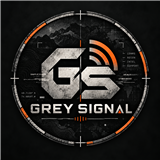

Projects
Projects with purpose.
Independent projects, each with a case study here and a standalone site or repository you can open and explore.
Standalone sites
Open the real thing.
These open in a new tab on their own websites.
Svart Security
Encrypted privacy tools: browser, AI, passwords, notes, chat, email and VPN. No tracking, no ads.

Grey Signal
Tactical-shooter and FPS channel with videos, ops and a live PC rig page.
JaeTheTech
Write code, build machines, break security. Includes the Personal AI project.
More work
Code and hardware.
JAE: Jaeger Adaptive Engine
A private, local-first AI desktop app built with Tauri, with MSI builds and a validated GitHub update pipeline.
Read more →PC hardware
Assembly, Windows setup and methodical troubleshooting, plus the Ryzen 9 / RTX 3070 Ti workstation.
Read more →Rig API + app
Live PC specs and load for your own website, with a tiny Windows app. Made for small sites and servers.
Read more →Get in touch
Want to talk about
any of these?
Happy to go deeper on how anything here was built.